Oumar Ben SalemÉlève de terminale générale spécialités math et sciences de l'ingénieur |
|
Ayant grandi avec internet et les jeux vidéos, j'ai développé un attrait pour le monde de l'informatique et j'ai appris à programmer vers l'âge de 9 ans grâce à mon envie de devenir développeur de jeux vidéo. Cet intérêt s'est également propagé à divers domaines, tels que la cryptographie et la cybersécurité, notamment le pentesting et le reverse engineering. Je suis poussé par une curiosité insatiable pour le monde qui m'entoure, que ce soit l'histoire, la biologie ou même la philosophie. Et c'est elle aussi qui me donne ma plus grande motivation : faire de mon mieux pour améliorer le monde autour de moi. L'INSA de Lyon m'attire particulièrement par sa volonté de former des ingénieurs non seulement compétents techniquement, mais aussi conscients des enjeux éthiques et sociétaux de leur métier. Je suis aussi intéressé par la vie étudiante à l'INSA Lyon et sa vie associative qui y ont une place très importante. L'INSA de Lyon comprend plus de 100 clubs différents et certains d'entre eux m'intéressent particulièrement, le "clubelek" et "graine d'images" Finalement la dernière raison pour laquelle je souhaite postuler à l'INSA est le réseau qu'elle fournit aux diplômés qui m'aidera fortement pour construire un projet professionnel qui me correspond : un projet qui me permettra d'avoir un impact positif sur le monde, que ce soit par la création d'outils médicaux ou par la création de dispositifs pour analyser des populations d'animaux. |
mes passions |
|
|  | badminton |
|  | cybersécurité |
lecture |
|
photographie |
|
volleyball |
|
| [ PROJET ] | [ DÉTAILS ] |
|---|---|
math en jean |
Projet de recherche mathématique |
Olympiade de l'ingénieurlien: site |
Création d'un garage à trottinette sécurisé (Ville de demain) |
concours kangourou |
Exercices de logique et de raisonnement |
Concours général |
Participation au concours général de mathématiques |
stage ada / cadence |
Observation chez Cadence Design Systems (PCB/Micro-processeurs) |
MUN / Échanges |
Diplomatie (Pays-Bas) et échange à Mulheim am Main (Allemagne) |
| [ COMPÉTENCES ] | |
Informatique |
Programmation: |
Langues |
Anglais: B2+/C1 (Diplomatie MUN) |
Modélisation 3D |
Blender (Niveau débutant) |